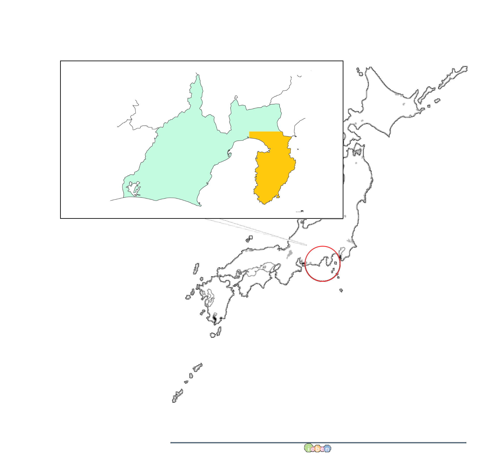

伊豆半島とは
古くから関東近辺の温泉地として知られて来た伊豆半島
今なお火山が活発に活動を続けており「地球は生きている」事を肌身で感じる事ができます。
温泉はもちろんの事、海の幸から自然の探索まで幅広いジャンルの観光が楽しめるのが魅力です。
都心からのアクセスの良さも魅力の一つ、鉄道・自家用車・バスなどたくさんの手段で訪れる事ができます。

古くから関東近辺の温泉地として知られて来た伊豆半島
今なお火山が活発に活動を続けており「地球は生きている」事を肌身で感じる事ができます。
温泉はもちろんの事、海の幸から自然の探索まで幅広いジャンルの観光が楽しめるのが魅力です。
都心からのアクセスの良さも魅力の一つ、鉄道・自家用車・バスなどたくさんの手段で訪れる事ができます。